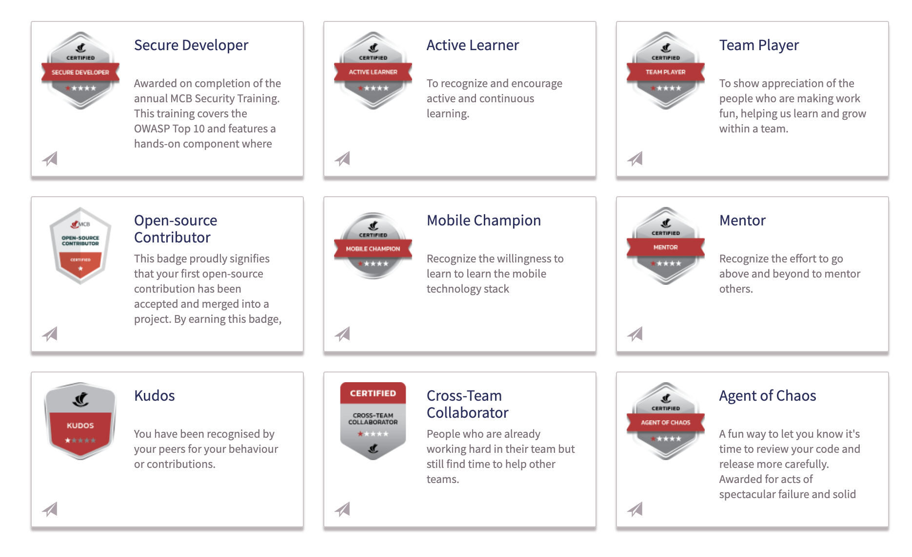
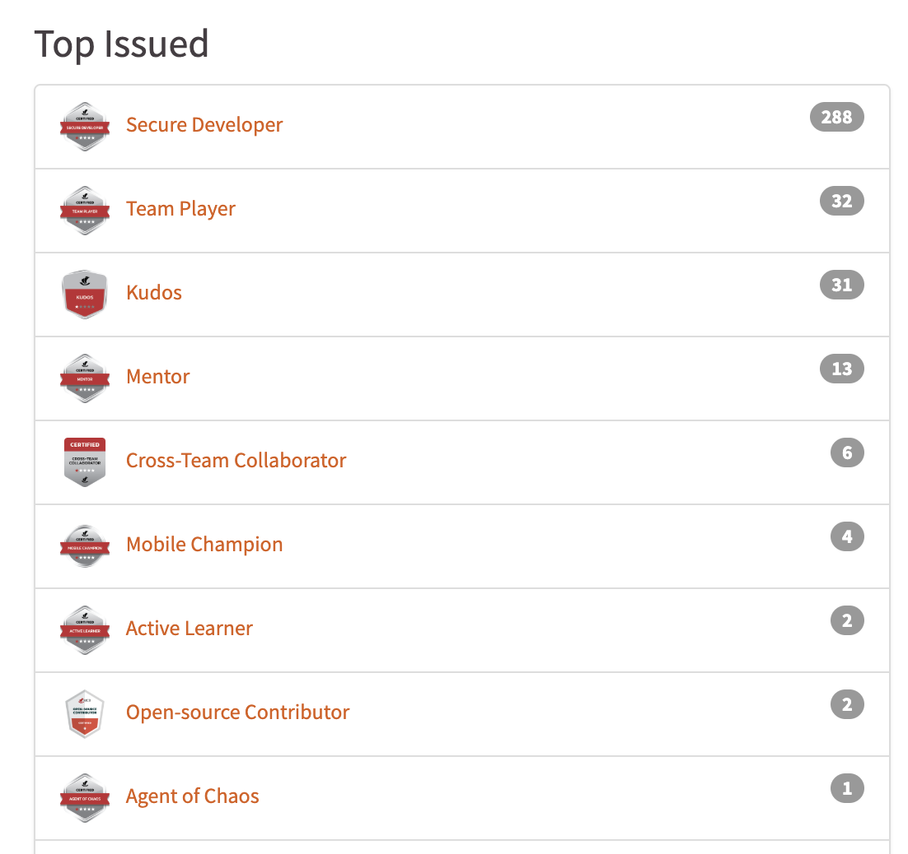

<!DOCTYPE html>


<html lang="en">
  

    <head>
      <meta charset="utf-8" />
       
      <meta name="keywords" content="agile, tdd, software engineering" />
       
      <meta
        name="viewport"
        content="width=device-width, initial-scale=1, maximum-scale=1"
      />
      
      <title>Implementing an Engineering Badge Programme |  nick dot blog</title>
  <meta name="generator" content="hexo-theme-ayer">
      
      <link rel="shortcut icon" href="/favicon.ico" />
       
<link rel="stylesheet" href="/dist/main.css">

      
<link rel="stylesheet" href="/css/fonts/remixicon.css">

      
<link rel="stylesheet" href="/css/custom.css">
 
      <script src="https://cdn.staticfile.org/pace/1.2.4/pace.min.js"></script>
       
<!-- Global site tag (gtag.js) - Google Analytics -->
<script async src="https://www.googletagmanager.com/gtag/js?id=G-KXJW9BVBJ4"></script>
<script>
  window.dataLayer = window.dataLayer || [];
  function gtag(){dataLayer.push(arguments);}
  gtag('js', new Date());
  gtag('config', 'G-KXJW9BVBJ4');
</script>

 

      <link
        rel="stylesheet"
        href="https://cdn.jsdelivr.net/npm/@sweetalert2/theme-bulma@5.0.1/bulma.min.css"
      />
      <script src="https://cdn.jsdelivr.net/npm/sweetalert2@11.0.19/dist/sweetalert2.min.js"></script>

      <!-- mermaid -->
      
      <style>
        .swal2-styled.swal2-confirm {
          font-size: 1.6rem;
        }
      </style>
    <link rel="alternate" href="/atom.xml" title="nick dot blog" type="application/atom+xml">
</head>
  </html>
</html>


<body>
  <div id="app">
    
      
    <main class="content on">
      <section class="outer">
  <article
  id="post-badges"
  class="article article-type-post"
  itemscope
  itemprop="blogPost"
  data-scroll-reveal
>
  <div class="article-inner">
    
    <header class="article-header">
       
<h1 class="article-title sea-center" style="border-left:0" itemprop="name">
  Implementing an Engineering Badge Programme
</h1>
 

      
    </header>
     
    <div class="article-meta">
      <a href="/2025/04/09/badges/" class="article-date">
  <time datetime="2025-04-09T12:50:25.000Z" itemprop="datePublished">2025-04-09</time>
</a>   
<div class="word_count">
    <span class="post-time">
        <span class="post-meta-item-icon">
            <i class="ri-quill-pen-line"></i>
            <span class="post-meta-item-text"> Word count:</span>
            <span class="post-count">1.1k</span>
        </span>
    </span>

    <span class="post-time">
        &nbsp; | &nbsp;
        <span class="post-meta-item-icon">
            <i class="ri-book-open-line"></i>
            <span class="post-meta-item-text"> Reading time≈</span>
            <span class="post-count">6 min</span>
        </span>
    </span>
</div>
 
    </div>
      
    <div class="tocbot"></div>


  
    <div class="article-entry" itemprop="articleBody">
       
  <p>A year ago we launched our Engineering Badge program. This post talks about what it is, why we needed it and how it’s going.</p>


<h1 id="What-is-it"><a href="#What-is-it" class="headerlink" title="What is it?"></a>What is it?</h1><p>Badges are micro-certifications that recognise an individual for a specific trait, behaviour or achievement. Badges are often used in online learning platforms, corporate training, and certification programs. Once earned they can be shared across social media, digital resumes, or professional networks to showcase expertise.</p>
<p>Badges typically leverage elements of gamification in that there are a number of them to collect with specific criteria or combinations of criteria for each one.  People are encouraged to collect the badges and then share the accomplishment internally and externally via platforms such as LinkedIn or Facebook. The process of earning badges creates a sense of accomplishment and progression, motivating individuals to continue learning or achieving goals.</p>
<h1 id="Why-do-we-need-one"><a href="#Why-do-we-need-one" class="headerlink" title="Why do we need one?"></a>Why do we need one?</h1><p>The team told us that we needed more recognition, not just in terms of volume but something more meaningful and less transient than a public ‘kudos’. We had seen the popularity of people sharing badges after achieving new certifications on LinkedIn and even people sharing their PluralSight badges and felt that this could be something worth exploring.</p>
<h1 id="How-is-our-Badge-Program-Structured"><a href="#How-is-our-Badge-Program-Structured" class="headerlink" title="How is our Badge Program Structured?"></a>How is our Badge Program Structured?</h1><p>We started by identifying the underlying principles of the program. We did this by workshopping the idea with the broader team. After all, if the team were not supportive of the initiative and engage with it we were doomed to failure.</p>
<p>After a bit of discussion the following principles emerged:</p>
<ul>
<li>Badges should never conflict with our values as a team or organisation.</li>
<li>Badges should recognise the behaviours we want to see in our team.</li>
<li>Badges should never create competition between people. Specifically we should not have a situation where my earning the badge means that you cannot. </li>
<li>Earning badges should not require additional overtime.</li>
<li>Someone should never have to choose between the normal activities and earning a badge.</li>
<li>There must be transparency around how and why a badge was awarded.</li>
<li>We should prevent sprawl or overly niche badges.</li>
<li>Badges must always be in response to action - never just an attendance award.</li>
</ul>
<p>Next we set about designing the structure:</p>
<ul>
<li>Badges can be permanent or they can expire.</li>
<li>Badges have a level: 1, 2, 3 stars .</li>
<li>Some badges can be earned multiple times which level’s them up.</li>
<li>Some badges are earned based on achieving combinations of other badges.</li>
<li>Badges have a theme.</li>
</ul>
<p>With the principles as a guide we workshopped an initial set of Badges, some of which you can see above. Finally, we worked with our Marketing team to design the badges. We wanted something that referenced our corporate identity but that could stand on its own.</p>
<blockquote>
<p>My personal favorite is the ‘Agent of Chaos’ - for people who have made mistakes and recovered with style.</p>
</blockquote>
<h1 id="How-do-we-run-and-administer-the-Badge-Program"><a href="#How-do-we-run-and-administer-the-Badge-Program" class="headerlink" title="How do we run and administer the Badge Program?"></a>How do we run and administer the Badge Program?</h1><p>We formed a small team of volunteers from all levels of engineering  to look after the badge program. The members of this team rotate over time so that we ensure diversity and representation. </p>
<p>We created a Badge nomination form where people can nominate themselves or others.</p>
<p>Once a month the team meets to review the nominations which we then confer to the people at our monthly Engineering Catch-up. </p>
<p>Periodically we review the badges. Adding new ones and retiring old ones as required.</p>
<h1 id="How-do-we-track-the-impact-of-the-Badge-program"><a href="#How-do-we-track-the-impact-of-the-Badge-program" class="headerlink" title="How do we track the impact of the Badge program?"></a>How do we track the impact of the Badge program?</h1><p>We use the following metrics to gauge the impact of the program.</p>
<p><strong>Nominations.</strong> The number of nominations is a proxy for engagement. People taking the time to recognise their colleagues or to nominate themselves tells us that they find meaning and value in the process. In addition to the number of nominations we also look at what badges people are being nominated for. Certain badges garner more nominations than others - Kudos and Team Work are very popular for example. In other cases some badges have never received a nomination. In this case we must evaluate if it’s a case of people not being aware of the badge or if the badge is poorly conceived. In the former case this is a great opportunity to do some PR for the badge - and indirectly highlight the underlying behaviours. In the latter however this is cause for some introspection - does the badge conflict with the principles? Do people not find value in it? Are the criteria poorly defined or onerous.</p>
<p><strong>Acceptance Rate.</strong> When a badge is issued the recipient must claim it on our Badge platform. This acceptance rate, currently at 80%, tells that the recipient values the badge and wants to be associated with it. The logic here is that if someone saw no value in it, or disagreed with it they would not take the time to go to the website to claim it.</p>
<p><strong>Sharing rate.</strong> Lastly we track how many people share their badges externally. This is our ultimate validation in that a person would not share something publicly if they did not thing it had value or if they were not in some way proud of the recognition.  This metric is currently at 30% and rising. </p>
<blockquote>
<p>We are currently using the <a target="_blank" rel="noopener" href="https://openbadgefactory.com/">Open Badge Factory</a> platform. </p>
</blockquote>
<h1 id="What-have-our-results-been-like-so-far"><a href="#What-have-our-results-been-like-so-far" class="headerlink" title="What have our results been like so far?"></a>What have our results been like so far?</h1>

<p>To date we have issued over 300 Badges. A good portion of these were for the ‘Secure Developer’ badge awarded to everyone who participated in our annual security hackathon. Shortly after launch we started receiving nominations for and from people outside of Engineering. Based on this we decided to expand the program to include the other chapters in Tech - QA, Infra etc. With the help of our internal culture team we are about to re-launch the initiative as a Tech-wide program and scale it with more tangible rewards and more frequent awards sessions.</p>
<h1 id="Where-to-from-here"><a href="#Where-to-from-here" class="headerlink" title="Where to from here?"></a>Where to from here?</h1><p>It all comes down to engagement. If people keep engaging with the program we will continue to evolve the program. Some ideas include ‘treasure hunt’ style badges or badges that need to be earned as a team. If we can build enough momentum maybe this is something that grows beyond its origins in Tech and adds value to the larger organisation. Will check in on all of this later, for now - we have some badges to award!</p>
 
      <!-- reward -->
      
    </div>
    

    <!-- copyright -->
    
    <div class="declare">
      <ul class="post-copyright">
        <li>
          <i class="ri-copyright-line"></i>
          <strong>Copyright： </strong>
          
          Copyright is owned by the author. For commercial reprints, please contact the author for authorization. For non-commercial reprints, please indicate the source.
          
        </li>
      </ul>
    </div>
    
    <footer class="article-footer">
       
  <ul class="article-tag-list" itemprop="keywords"><li class="article-tag-list-item"><a class="article-tag-list-link" href="/tags/Engineering-Management/" rel="tag">Engineering Management</a></li></ul>

    </footer>
  </div>

   
  <nav class="article-nav">
    
    
      <a href="/2024/09/18/BackstagePluginDemo/" class="article-nav-link">
        <strong class="article-nav-caption">Next Post</strong>
        <div class="article-nav-title">Building a custom Backstage Plugin</div>
      </a>
    
  </nav>

  
   
<div class="gitalk" id="gitalk-container"></div>

<link rel="stylesheet" href="https://cdn.staticfile.org/gitalk/1.7.2/gitalk.min.css">


<script src="https://cdn.staticfile.org/gitalk/1.7.2/gitalk.min.js"></script>


<script src="https://cdn.staticfile.org/blueimp-md5/2.19.0/js/md5.min.js"></script>

<script type="text/javascript">
  var gitalk = new Gitalk({
    clientID: '8318211c28156a054b60',
    clientSecret: 'a3e7c2c22e61867951cbca3c52fbcc22f43dcfb8',
    repo: 'BlogComments',
    owner: 'nickmza',
    admin: ['nickmza'],
    // id: location.pathname,      // Ensure uniqueness and length less than 50
    id: md5(location.pathname),
    distractionFreeMode: false,  // Facebook-like distraction free mode
    pagerDirection: 'last'
  })

  gitalk.render('gitalk-container')
</script>

  
   
    <script src="https://cdn.staticfile.org/twikoo/1.4.18/twikoo.all.min.js"></script>
    <div id="twikoo" class="twikoo"></div>
    <script>
        twikoo.init({
            envId: ""
        })
    </script>
 
</article>

</section>
      <footer class="footer">
  <div class="outer">
    <ul>
      <li>
        Copyrights &copy;
        2015-2025
        <i class="ri-heart-fill heart_icon"></i> Nick Mckenzie
      </li>
    </ul>
    <ul>
      <li>
        
      </li>
    </ul>
    <ul>
      <li>
        
      </li>
    </ul>
    <ul>
      
    </ul>
    <ul>
      
    </ul>
    <ul>
      <li>
        <!-- cnzz统计 -->
        
        <script type="text/javascript" src='https://s9.cnzz.com/z_stat.php?id=1278069914&amp;web_id=1278069914'></script>
        
      </li>
    </ul>
  </div>
</footer>    
    </main>
    <div class="float_btns">
      <div class="totop" id="totop">
  <i class="ri-arrow-up-line"></i>
</div>

<div class="todark" id="todark">
  <i class="ri-moon-line"></i>
</div>

    </div>
    <aside class="sidebar on">
      <button class="navbar-toggle"></button>
<nav class="navbar">
  
  <div class="logo">
    <a href="/"></a>
  </div>
  
  <ul class="nav nav-main">
    
    <li class="nav-item">
      <a class="nav-item-link" href="/">Home</a>
    </li>
    
    <li class="nav-item">
      <a class="nav-item-link" href="/archives">Archives</a>
    </li>
    
    <li class="nav-item">
      <a class="nav-item-link" href="/categories">Categories</a>
    </li>
    
    <li class="nav-item">
      <a class="nav-item-link" href="/tags">Tags</a>
    </li>
    
    <li class="nav-item">
      <a class="nav-item-link" href="/Resources">Resources</a>
    </li>
    
    <li class="nav-item">
      <a class="nav-item-link" href="/about">About</a>
    </li>
    
  </ul>
</nav>
<nav class="navbar navbar-bottom">
  <ul class="nav">
    <li class="nav-item">
      
      <a class="nav-item-link nav-item-search"  title="Search">
        <i class="ri-search-line"></i>
      </a>
      
      
      <a class="nav-item-link" target="_blank" href="/atom.xml" title="RSS Feed">
        <i class="ri-rss-line"></i>
      </a>
      
    </li>
  </ul>
</nav>
<div class="search-form-wrap">
  <div class="local-search local-search-plugin">
  <input type="search" id="local-search-input" class="local-search-input" placeholder="Search...">
  <div id="local-search-result" class="local-search-result"></div>
</div>
</div>
    </aside>
    <div id="mask"></div>

<!-- #reward -->
<div id="reward">
  <span class="close"><i class="ri-close-line"></i></span>
  <p class="reward-p"><i class="ri-cup-line"></i>请我喝杯咖啡吧~</p>
  <div class="reward-box">
    
    <div class="reward-item">
      
      <span class="reward-type">支付宝</span>
    </div>
    
    
    <div class="reward-item">
      
      <span class="reward-type">微信</span>
    </div>
    
  </div>
</div>
    
<script src="/js/jquery-3.6.0.min.js"></script>
 
<script src="/js/lazyload.min.js"></script>

<!-- Tocbot -->
 
<script src="/js/tocbot.min.js"></script>

<script>
  tocbot.init({
    tocSelector: ".tocbot",
    contentSelector: ".article-entry",
    headingSelector: "h1, h2, h3, h4, h5, h6",
    hasInnerContainers: true,
    scrollSmooth: true,
    scrollContainer: "main",
    positionFixedSelector: ".tocbot",
    positionFixedClass: "is-position-fixed",
    fixedSidebarOffset: "auto",
  });
</script>

<script src="https://cdn.staticfile.org/jquery-modal/0.9.2/jquery.modal.min.js"></script>
<link
  rel="stylesheet"
  href="https://cdn.staticfile.org/jquery-modal/0.9.2/jquery.modal.min.css"
/>
<script src="https://cdn.staticfile.org/justifiedGallery/3.8.1/js/jquery.justifiedGallery.min.js"></script>

<script src="/dist/main.js"></script>

<!-- ImageViewer -->
 <!-- Root element of PhotoSwipe. Must have class pswp. -->
<div class="pswp" tabindex="-1" role="dialog" aria-hidden="true">

    <!-- Background of PhotoSwipe. 
         It's a separate element as animating opacity is faster than rgba(). -->
    <div class="pswp__bg"></div>

    <!-- Slides wrapper with overflow:hidden. -->
    <div class="pswp__scroll-wrap">

        <!-- Container that holds slides. 
            PhotoSwipe keeps only 3 of them in the DOM to save memory.
            Don't modify these 3 pswp__item elements, data is added later on. -->
        <div class="pswp__container">
            <div class="pswp__item"></div>
            <div class="pswp__item"></div>
            <div class="pswp__item"></div>
        </div>

        <!-- Default (PhotoSwipeUI_Default) interface on top of sliding area. Can be changed. -->
        <div class="pswp__ui pswp__ui--hidden">

            <div class="pswp__top-bar">

                <!--  Controls are self-explanatory. Order can be changed. -->

                <div class="pswp__counter"></div>

                <button class="pswp__button pswp__button--close" title="Close (Esc)"></button>

                <button class="pswp__button pswp__button--share" style="display:none" title="Share"></button>

                <button class="pswp__button pswp__button--fs" title="Toggle fullscreen"></button>

                <button class="pswp__button pswp__button--zoom" title="Zoom in/out"></button>

                <!-- Preloader demo http://codepen.io/dimsemenov/pen/yyBWoR -->
                <!-- element will get class pswp__preloader--active when preloader is running -->
                <div class="pswp__preloader">
                    <div class="pswp__preloader__icn">
                        <div class="pswp__preloader__cut">
                            <div class="pswp__preloader__donut"></div>
                        </div>
                    </div>
                </div>
            </div>

            <div class="pswp__share-modal pswp__share-modal--hidden pswp__single-tap">
                <div class="pswp__share-tooltip"></div>
            </div>

            <button class="pswp__button pswp__button--arrow--left" title="Previous (arrow left)">
            </button>

            <button class="pswp__button pswp__button--arrow--right" title="Next (arrow right)">
            </button>

            <div class="pswp__caption">
                <div class="pswp__caption__center"></div>
            </div>

        </div>

    </div>

</div>

<link rel="stylesheet" href="https://cdn.staticfile.org/photoswipe/4.1.3/photoswipe.min.css">
<link rel="stylesheet" href="https://cdn.staticfile.org/photoswipe/4.1.3/default-skin/default-skin.min.css">
<script src="https://cdn.staticfile.org/photoswipe/4.1.3/photoswipe.min.js"></script>
<script src="https://cdn.staticfile.org/photoswipe/4.1.3/photoswipe-ui-default.min.js"></script>

<script>
    function viewer_init() {
        let pswpElement = document.querySelectorAll('.pswp')[0];
        let $imgArr = document.querySelectorAll(('.article-entry img:not(.reward-img)'))

        $imgArr.forEach(($em, i) => {
            $em.onclick = () => {
                // slider展开状态
                // todo: 这样不好，后面改成状态
                if (document.querySelector('.left-col.show')) return
                let items = []
                $imgArr.forEach(($em2, i2) => {
                    let img = $em2.getAttribute('data-idx', i2)
                    let src = $em2.getAttribute('data-target') || $em2.getAttribute('src')
                    let title = $em2.getAttribute('alt')
                    // 获得原图尺寸
                    const image = new Image()
                    image.src = src
                    items.push({
                        src: src,
                        w: image.width || $em2.width,
                        h: image.height || $em2.height,
                        title: title
                    })
                })
                var gallery = new PhotoSwipe(pswpElement, PhotoSwipeUI_Default, items, {
                    index: parseInt(i)
                });
                gallery.init()
            }
        })
    }
    viewer_init()
</script> 
<!-- MathJax -->

<!-- Katex -->

<!-- busuanzi  -->

<!-- ClickLove -->

<!-- ClickBoom1 -->

<!-- ClickBoom2 -->

<!-- CodeCopy -->
 
<link rel="stylesheet" href="/css/clipboard.css">
 <script src="https://cdn.staticfile.org/clipboard.js/2.0.10/clipboard.min.js"></script>
<script>
  function wait(callback, seconds) {
    var timelag = null;
    timelag = window.setTimeout(callback, seconds);
  }
  !function (e, t, a) {
    var initCopyCode = function(){
      var copyHtml = '';
      copyHtml += '<button class="btn-copy" data-clipboard-snippet="">';
      copyHtml += '<i class="ri-file-copy-2-line"></i><span>COPY</span>';
      copyHtml += '</button>';
      $(".highlight .code pre").before(copyHtml);
      $(".article pre code").before(copyHtml);
      var clipboard = new ClipboardJS('.btn-copy', {
        target: function(trigger) {
          return trigger.nextElementSibling;
        }
      });
      clipboard.on('success', function(e) {
        let $btn = $(e.trigger);
        $btn.addClass('copied');
        let $icon = $($btn.find('i'));
        $icon.removeClass('ri-file-copy-2-line');
        $icon.addClass('ri-checkbox-circle-line');
        let $span = $($btn.find('span'));
        $span[0].innerText = 'COPIED';
        
        wait(function () { // 等待两秒钟后恢复
          $icon.removeClass('ri-checkbox-circle-line');
          $icon.addClass('ri-file-copy-2-line');
          $span[0].innerText = 'COPY';
        }, 2000);
      });
      clipboard.on('error', function(e) {
        e.clearSelection();
        let $btn = $(e.trigger);
        $btn.addClass('copy-failed');
        let $icon = $($btn.find('i'));
        $icon.removeClass('ri-file-copy-2-line');
        $icon.addClass('ri-time-line');
        let $span = $($btn.find('span'));
        $span[0].innerText = 'COPY FAILED';
        
        wait(function () { // 等待两秒钟后恢复
          $icon.removeClass('ri-time-line');
          $icon.addClass('ri-file-copy-2-line');
          $span[0].innerText = 'COPY';
        }, 2000);
      });
    }
    initCopyCode();
  }(window, document);
</script>
 
<!-- CanvasBackground -->

<script>
  if (window.mermaid) {
    mermaid.initialize({ theme: "forest" });
  }
</script>


    
    

  </div>
</body>

</html>